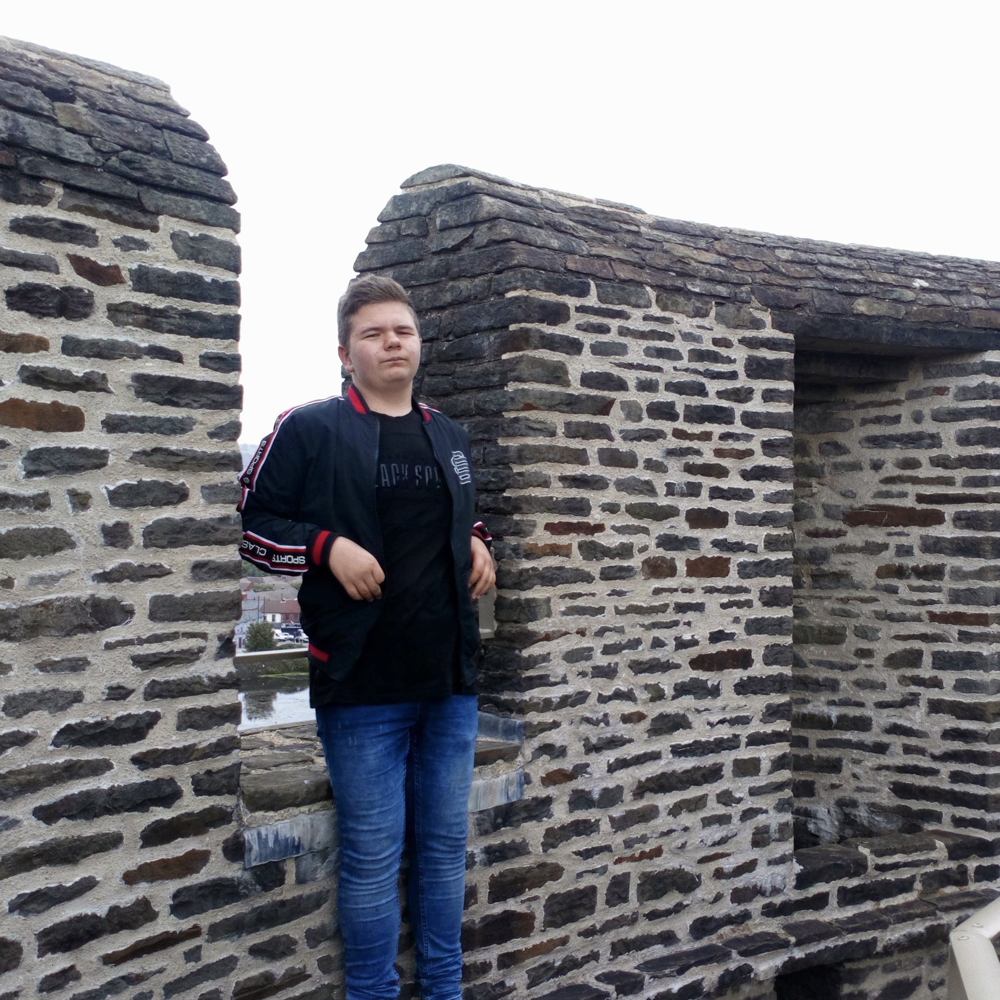

My name is Kacper, I was born and I lived in Poland until august of 2020. I am 19 years old. When I lived in Poland, I was helping in animal shelters, and I was a volunteer for a charity called Caritas, for which I helped in collecting food for less fortunate.
In the future I want to work as a game developer, software developer, IT technician or a Cyber Security analyst. I am interested in modern day technologies, online world, networking and programming, and that is why I decided to apply for this course.
I like listening to music while I’m working because it helps me to focus, relieves stress and it makes me more creative.
I like playing video games, especially single-player role-playing games, I also am interested in cars and motorcycles, as well as astronomy and other areas of science.
Based on the 16personalities test, I am a mediator, which means that I am creative and imaginative, and the iMA test has shown that I am a high green personality type, which indicates that I am logical and organised. The test also shows that I am working hard and that I prefer creating good quality products.
